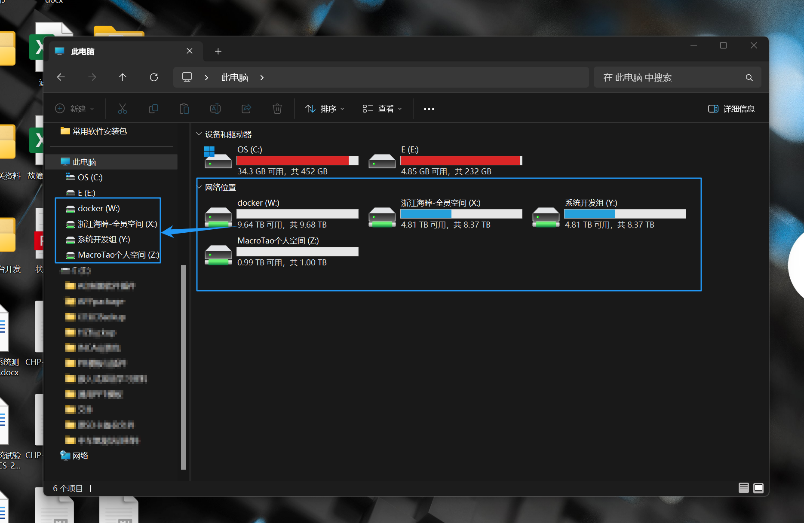

海晫服务器功能使用手册
前言：
各位同事，数据无价！近期公司采购了一款微型服务器，用于运行远程监控设备的Web应用。为了能够将此服务器的价值最大化，现向各位同事推出基于此服务器搭建的两个功能：数据存储、共享功能 以及 云电脑功能，希望能够服务于各位，提供一些工作便利。
1. 数据存储、共享功能
1.1 效果展示
- 对云存储空间中的内容增、删、改、查，可以和操作本地文件一样，但实际的数据存储与服务器中，不占用用户本地电脑的存储空间，既可以缓解本地电脑的内存容量，也可以轻松实现数据/文件共享功能，并在一定程度上实现数据加密和数据备份。
如下图，为添加了数据库存储空间后的存储盘：
{kind=link}

进入存储盘的方式与访问本地文件夹一样（双击即可进入），根据每位用户的权限不同，可以对存储盘中的文件执行不同的操作（操作权限分为：1.不可见；2.可见但不可增、删、改；3.可见且可增、删、改） 以下展示的为进入\浙江海晫-全员空间\常用软件安装包文件路径后，可像操作存储与本地电脑的安装包一样，在不受网速限制的情况下，执行增、删、改，或执行程序安装操作。

下图展示为：进入/浙江海晫-全员空间路径后，由于用户对/浙江海晫-全员空间 文件夹的操作权限为仅可查看，故无法向此路径中上传文件。

1.2 使用方法
1.2.1 局域网下的使用方法
首先，在用户自己的电脑上，将 Wifi 切换连接至带有
浙江海晫二楼大厅字样的无线网络（一共有4个，任意一个均可）（此网络现被定义为海晫公司内网或局域网），接下来便可选择如下两种方式访问自己的云空间。- 方法一：浏览器访问（第一次访问时建议使用此方法，因为初始密码需要用户重置）
单击此链接 https://siltrax.local:9443 ，即可跳转至浏览器，并打开登录页面。用户首次登录时需要将管理员设置的默认登录密码重置（密码重置有要求，见下文
1.2.3 注意事项），首次登录时的账户密码为 Hz123456（所有用户都是这个密码），现在服务器中已经建立的用户见下图，如果存在遗漏，请联系@张宏涛。
🚨 注意：为了保证服务器数据传输的保密程度，服务器设置了重定向加密访问，所以当你点击链接网址或输入URL进入网页时，可能会出现下图的警告页面，（本手册中涉及的所有网址链接，在用户首次进入时，可能都会出现这里提及的安全警告页面，直接执行即可，不需要担心安全问题，但是！但是！但是！如果你在点击其他的、不能确定安全性的网址链接时，如果出现这种情况，请你不要连接、不要连接、不要连接！！！）

对于本网址不用担心，直接按下图中所示步骤继续访问即可。

- 方法二：本地电脑网络映射（在浏览器中修改完密码后，采用此方法，以达到云空间本地操作的效果）
步骤1——用户在本地电脑上按下
Win+E键，随后在弹出的弹窗中找到位于左下角的网络选项 单击进入（这时电脑正在通过网络搜索设备，需要等待一段时间），然后在搜索到的网络设备中找到名称为Siltrax-Cloud的服务器设备，双击进入服务器登录验证页面。如果找不到该设备，也可以在搜索栏输入\\192.168.2.62然后按回车键，即可跳转出登录弹窗。

步骤2——双击
Siltrax-Cloud服务器设备后，会弹出如下图的登录验证页面，在登录页面中输入自己的用户名和密码（这里的用户名与方法一截图中的一致，密码则是用户在执行方法一后修改后的密码），此外，建议在首次登录时勾选上记住我得凭证这样下次可无需再重新输入账密。
步骤3——进入服务器后，即可看到用户具有
可读或读写权限的云存储空间（进入服务器后，每位用户的情况可能不一样，且空间权限可联系管理员进行更改，也可联系管理员新建用户需求的新空间）。接下来，用户可以根据自己的需求，对服务器中的空间进行映射操作（此操作非必须，不执行也可正常使用，但是执行该操作后，用户可以获得更加便捷的使用体验，所以建议执行），映射操作有两种，一种为映射到此电脑目录下，另一种为创建到桌面快捷方式，当然两种方法并不冲突，可以同时使用。
- 映射到
此电脑：右键单击想要映射的文件夹，执行目录中找到映射网络驱动器选项，在弹出的窗口执行默认选项，直接单击完成。（有些用户可能需要检查“登录时重新连接”是否已勾选，如果没有勾选，勾选上即可）
- 创建桌面快捷方式：右键单击想要创建快捷方式的文件夹，在选项框中点击
创建快捷方式，在弹出的警告框中，点击“是”，随后便可以回到桌面看到该文件夹，获得同操作本地文件夹一样的使用体验。
- 映射到
1.2.2 互联网下使用方法
为了保证服务器的安全性，暂时不开放公网访问功能。若同事以后在出差过程中需需要访问服务器的需求，可以联系管理员开通临时访问权限。
这里介绍一下什么情况下需要使用互联网来访问服务器：首先要明确现在海晫公司的内网路由器与服务器连接在一起（均部署于二楼会议室旁边的小房间里，这可能是暂时性的，如果后续运维人员有所改动，一定会通知大家），明确了内网的路由器来源，那么内网路由器的网络（包含LAN网口、WIFI）都属于内网网络，大家目前能够连接内网的方式大概也只有连接WIFI这一种方式（因为路由器网口有限，大家可能同是连接到路由器上的网口，但实际上，不论是连接LAN网口还是WIFI，效果都是一样的，都是可以连接到公司内网的），于是重点来了，当用户无法连接到公司内网时，在这种情况下，如果想要访问服务器，只有通过公网访问的方式。但是，一旦服务器开通了公网访问，那么互联网上的所有人（只要有能够联网的电子设备）都可以通过这种方式来访问到公司的服务器。当然，一般人都会被拦在用户登录这一步骤（因为他们没有登录到公司服务器的账户、密码），但是网络上仍然会有一些黑客，他们可以通过一些技术手段来破解我们的服务器登录凭证，在没有账密的情况下，仍然可以很轻松的进入，更可怕的是，这些黑客往往会使用一些技术手段来对互联网上所有开通公网访问的服务器进行7*24h的攻击。看到这里，希望大家能够明白，服务器的使用往往是利弊相依，但是我们也不能讳疾忌医，毕竟服务器确实能够为我们带来一定的工作便利。那么，我们该如何在保证服务器安全的情况下将便利最大化呢？大概有很多应对方法，但不论哪种方法的目的都是防范于未然，因为一旦意外发生，所有的努力都是白费。所以对于用户来说，一方面尽量避免在需要公网访问的环境中使用服务器，一方面也时刻贯彻安全上网的意识，不明的网址链接不要点、不安全的网站不要访问、不干净的文件&程序&数据不要下载…… 说到这里，就在本周日我就很惊讶的发现自己收到了一条未知短信，短信内容只有一条不明网址（看到这个是不是会有很多没有安全意识的同志会忍不住去点击它一探究竟呢？）。

说了很多，我想表达的意思只有一个：我们在共享同一个服务器的时候，保证数据安全就是我们每一个用户都需要参与到其中的义务，现在这个时代，不法分子总会想出一些让你始料不及的方法来窃取你的信息，所以各位同志们，一定要安全上网！
1.2.3 注意事项
首次登录，请使用网页登录模式，并修改自己的登录密码，设定的新登录密码应遵循规则如下：
- 新密码中必须同时包含大小写字母
- 新密码中必须至少有一位数字
- 新密码中必须至少有一位特殊字符
- 新密码长度不少于6位
具体请参照密码示例：Hz@123456
1.3 使用Everything工具，实现文件快速检索
Everything是一款能够通过模糊检索的方式快速定位本地电脑资源、网络服务器资源所在位置并可通过检索窗口打开被检索资源文件的工具。下图展示使用效果：

此应用程序使用方法比较简单，这里不再赘述，只讲一下如何将云存储空间添加进Everything的检索路径（Everything在默认情况下只会检索我们安装此应用的电脑里的本地存储文件如电脑的C盘、D盘，如果想检索其他文件夹，就需要用户自己手动添加检索路径）
添加检索路径的方法按照下图逐步执行即可，添加成功以后记得在检索框输入一个文件名验证一下是否配置成功。(注:当用户输入的文件名与检索路径里的文件不存在匹配项时，预览框里的内容将是空白的)


1.4 按照自身的权限需求，开通带有访问权限的共享文件夹
因为服务器还未正式投入运行，尚不能获取各位同事的具体需求，所以文件夹结构、存储空间权限还没有创建的很完善。现在开通的存储空间有三类：
- 各位同事的个人空间，容量为500G，访问权限为仅各位同事自己可用；
- 海晫公司全员共享空间，容量不受限制，访问权限为各位同事都可对二级文件夹下的内容进行操作（一级文件夹目录下，只可以查看、不可以增&删&改）；
- 各个工作组组内成员可以访问的空间，容量不受限制，访问权限为仅同一个工作组的同事可用，但是这部分空间还未完善，各位同事可以在使用过程中向管理员提出创建或修改的建议与需求。
服务器的功能完善需要所有用户一起参与！且后续还可以在服务器上部署更多的云应用程序，如三维软件等（实现更多的功能之前，服务器的硬件还需要进一步拓展）
2. 云电脑（Win 10 专业版操作系统）
2.1 云电脑现已安装的应用功能介绍
2.1.1 系统组测试数据查看工具：MDA（没有分析燃料电池系统测试数据的同事，可以跳过本节）
- 何为MDA？
MDA（Measurement Data Analyzer）是ETAS旗下一款专用于分析
.dat格式数据的数据分析工具。因为目前燃料电池系统测试过程产生的数据为.dat格式，若想查看系统测试数据，需要使用此应用程序。
- 如何使用MDA？
步骤1：在云电脑中找到 MDA 应用程序，双击打开，进入MDA应用程序中。

步骤2：在操作栏单击
“文件”按钮
步骤3：选择
“打开配置”
步骤4：选择
“打开文件”并浏览文件目录找到需要打开的数据文件
步骤5：勾选需要的数据文件（.dat 格式），点击
“打开”
步骤6：选择
“加载配置”
步骤7：浏览变量库，选择需要查看的变量

步骤8：以
示波器形式打开变量
步骤9：为所选变量定义坐标轴

步骤10：最后，即可看到所选变量的曲线图

- 何为MDA？
2.1.2 文件检索工具：Everything
- 何为Everything？
Everything是一款文件检索工具，可以通过模糊搜索的方式快速找到想要浏览的文件/文件夹 等。
- 如何使用Everything？
见 1.3 节的操作方法。
- 何为Everything？
2.2 云电脑的连接使用方法
2.2.1 局域网下访问远程桌面
- 电脑本地登录（推荐）：
步骤1——在本地电脑使用
win+R组合键，电脑出现如下图窗口，随后再窗口中输入mstsc，并点击“↩︎”回车键。
步骤2——弹出远程桌面连接窗口后，按照下图步骤依次填写登录凭证，并点击
“连接”按钮，随后弹出密码填写窗口。
步骤3——在弹出的密码填写窗口中，按照以下步骤依次填写密码，并勾选
记住我的凭据，点击确定按钮即可进入云电脑。
步骤4——在弹出的云电脑登陆页面，输入步骤3中填写的密码即可开始使用云电脑。

现已为云电脑开通两个用户账密：
用户名：HZ-CloudComputer-01 密码：HZ@123456用户名：HZ-admin-01 密码：HZ@123456💡注意：首次登录远程桌面时，各位同事需要错峰登录，没有使用云电脑需求的同事可以选择不登录，因为两个及以上用户同时使用同一个账号建立远程桌面时，会出现顶号的现象。
💡注意：服务器性能有限，不要在云脑电中安装、运行一些对RAM 及 GPU 要求过高的应用程序！
- 浏览器访问：
打开浏览器，输入网址（可直接点击以下链接访问）http://192.168.2.2:9999/kvm/novnc/?apiKey=L3GJ4w4tL2q8HwuEDnjOf3HQMopMPQbRllfjgaw9oNNM4l8V
等待网页自动跳转到云电脑的登录页面，然后从上面的
本地登录方式中选择一个账号登录，即可成功访问。💡注意：浏览器访问模式可以同时由若干个用户建立连接，但建立连接的用户无法进行同步操作，且当存在运程访问用户出现时，浏览器端仍旧会出现顶号现象。
- 电脑本地登录（推荐）：
2.2.2 互联网下访问远程桌面
- 浏览器访问：打开浏览器，输入网址（可直接点击以下链接访问）https://ug.link/siltrax/kvm/novnc/?apiKey=IQQ2M6G9A2PKYKOAavpyzNwQ2OXfXZLKnhlcSARMUcNVgIaT
随后按照上面的
局域网下浏览器访问方法进行连接，即可成功访问。💡注意：首次使用浏览器访问时，会跳出安全警告，不必理会，按照上面提及的方法处理即可。
💡注意：互联网模式只有浏览器访问一种方式，且互联网模式对网络的连接没有要求，只要本地电子设备可以正常联网即可！
- 浏览器访问：打开浏览器，输入网址（可直接点击以下链接访问）https://ug.link/siltrax/kvm/novnc/?apiKey=IQQ2M6G9A2PKYKOAavpyzNwQ2OXfXZLKnhlcSARMUcNVgIaT
2.2.3 使用云电脑时的相关注意事项
- 云电脑现在安装的应用软件有限，如用户有新的应用需求可自行安装。
- 云电脑中仍然可以访问服务器文件夹（当前云电脑具有访问权限的文件夹为：
浙江海晫-全员空间），如用户需要安装应用程序，需要先把应用程序的安装包放入\浙江海晫-全员空间\常用软件安装包目录下，然后前往云电脑中将被安装软件安装包提取至云电脑，即可执行安装。
- 云电脑用户如果有通过云电脑来访问用户自己的服务器空间的需求，也可以在云电脑中登录用户自己的服务器账号，具体的操作方法见
数据存储、共享使用方法。建议用户在远程办公时，身边没有一台安全的电子设备的情况下使用这种方法来访问自己的服务器空间，切记用户在退出云电脑使用之前，务必将自己的账户退出，避免账号泄露。
- 因为服务器的硬件条件有限，为了避免服务器宕机，目前仅开通一台云电脑配置，如果有同事迫切需求新增云电脑配置，可先提出需求，待后期拓展服务器 RAM 后可以实现。
- 使用MDA应用程序时，务必使用浏览器模式来访问云电脑，因为本地远程连接模式下的MDA有许可证限制（此限制与此软件本身有关，无法解除）